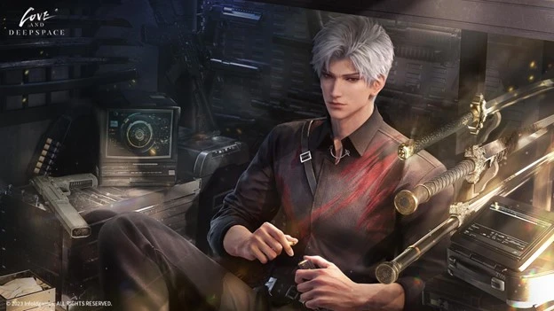

Here’s What Each Love and Deepspace Character Would Do With Your Social Security Number
Article Published by Ellison Larson, Terminally Online Degenerate at 05/10/2025 6:51 PM EST
So by now you have seen Love and Deepspace, the controversial CGI otome game/RPG released by Infold Games, the global division of Paper Games, creator of the Nikki franchise of dress up games.
The silent source of various memes, this game is based in China and my one of aunties think my social security card has been compromised and currently in the game. After all, America is the mother of conspiracy theories. Could it actually be? Not likely but let’s see what these men would do with such special information.
1. Xavier

Xavier is totally selling it for instant noodles, hotpot vouchers and activities to keep you inside which may or may not include condoms.
2. Zayne
Doctor Zayne would keep that filed away for safety purposes before stealing all of your macarons.
3. Rafayel
What would Rafayel do with such important information besides make a drawing using only your social security number to make your cute little face?
4. Sylus
Sylus would pay top dollar to make sure it never ended up on the black market and then go home to show you his new treasures and rail you on the couch.
5. Caleb
Caleb would totally throw it in a box of trinkets gathered from childhood as the only value it has to him is your name and any other information to keep you close.
Would you let these men loose with your social security number? Let us know in the comments!